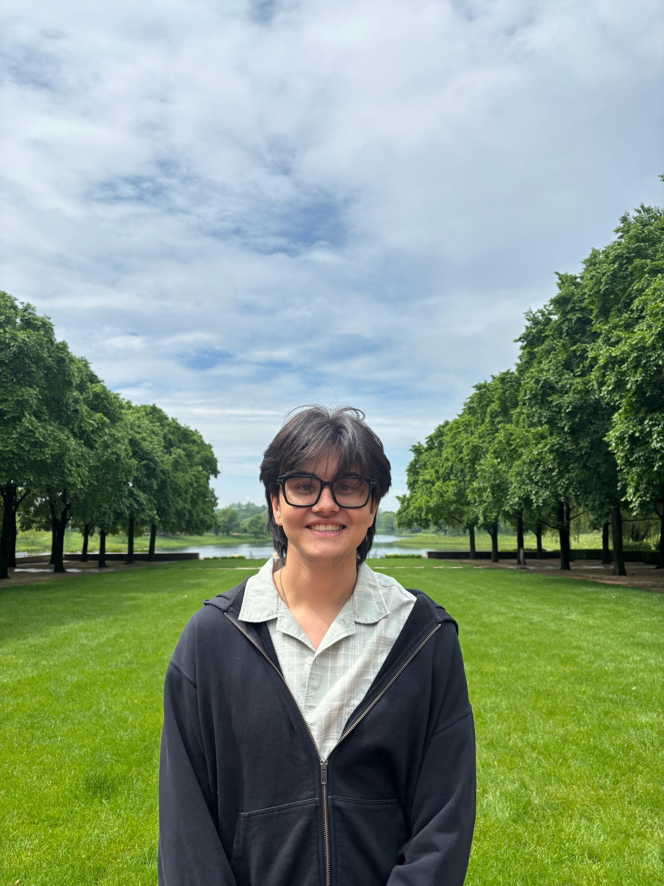
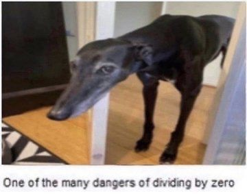

My name is Zachariah (Zach) Zobair and I am an incoming mathematics Ph.D. student at Duke University.
Previously, I was at Boston University,
where I completed my Bachelor's and Master's degrees in pure mathematics.
My Master's thesis advisor was Professor Alexander Bertoloni Meli.
I broadly like stuff that lies in the world of algebraic number theory and algebraic geometry.
More specifically, I recently have been enjoying studying things relating to the Langlands
program and automorphic representations.

Outside of math, I enjoy music and sports.
You can see the music I've been listening to recently by looking at my Spotify. Some artists/bands I'm into these days include Pavement, Khruangbin, and Dean Blunt. I'm a huge Boston sports fan. I mainly follow the NBA, but I tune into the NFL and MLB seasons while they're going on.
